Speaker Redaction Task
This document covers how to use the features added to the OLIVE Nightingale GUI to support the task of "Speaker Redaction". This allows for the assisted labeling and discovery of all sections of speech within an audio recording that belong to a single speaker, whose audio is wished to be removed from the audio in order to protect his or her identity. Currently, the designated audio is replaced with a tone, and all content there is destroyed. In the future, different approaches may be available that disguise the identity of the voice while leaving the content of the speech audible.
Speaker Redaction Task Overview
Generally, the process of stepping through the Redaction task follows these summarized steps:
- Load the audio to be processed
- Find and select an example of the speaker whose voice is to be redacted
- Submit this audio to the system, so it can find and suggest additional regions where this speaker occurs
- Add additional selections from these candidates to the labeled regions
- Optionally iterate through steps 3 and 4 until all audio from the speaker to be redacted is appropriately labeled
- Submit this audio to the redaction system to replace the labeled regions with a tone
- Review the resulting audio to make sure all of the speaker's audio was removed or disguised
- Add regions and resubmit to redaction system if necessary
This process is covered in more detail below.
Speaker Redaction Walkthrough
Getting Started
To get started with this task, first open the OLIVE Nightingale GUI and load an audio file in by dragging and dropping a file into one of the GUI waveform slots, or by pressing ctrl+o or cmd+o while the GUI has focus to enter an 'Open File' dialog.
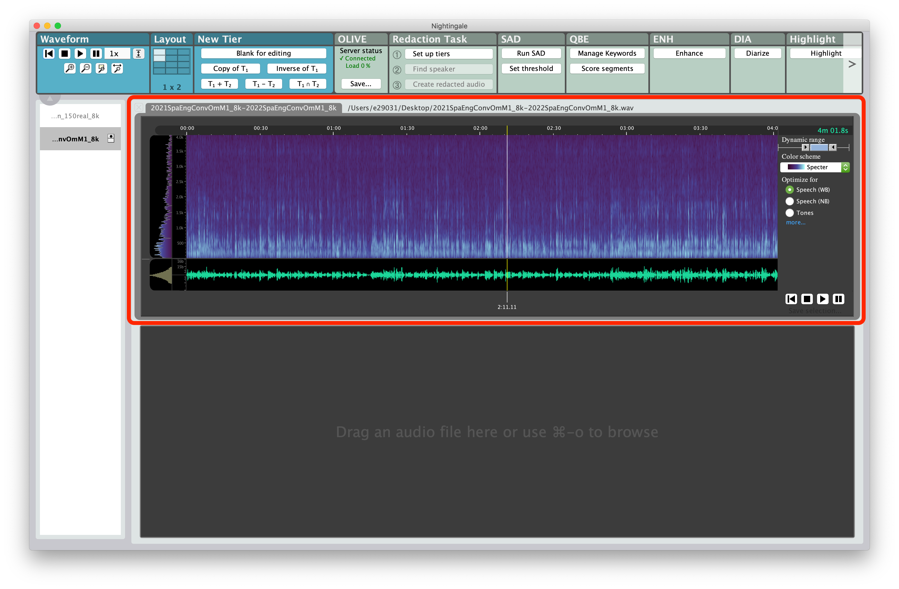
Once the audio is loaded, select the ‘1. Set up tiers’ button in the ‘Redaction Task’ panel.
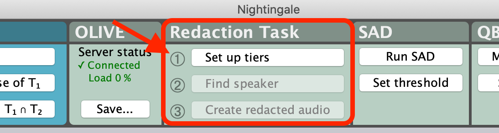
This will create two new tiers below the audio file:
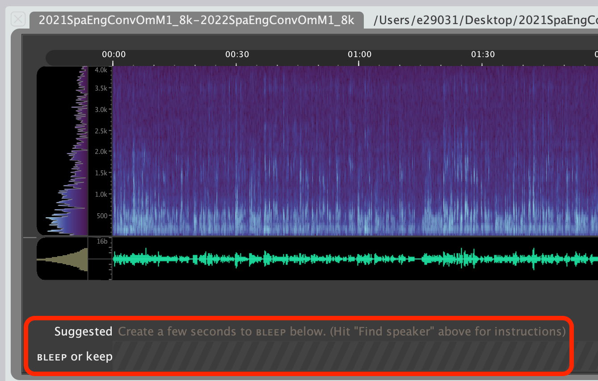
- Suggested
- This tier is where the results from the speaker search algorithm will be displayed, providing suggested regions that the system believes belong to the speaker whose speech has been provided in the
BLEEPregions of the tier below.
- This tier is where the results from the speaker search algorithm will be displayed, providing suggested regions that the system believes belong to the speaker whose speech has been provided in the
BLEEPorkeep- This tier is where you provide 'seed' regions, as
BLEEPlabels to inform the speaker-search system what the speaker to redact sounds like. - You can also use 'keep' labels to inform the system of regions that do not contain the speaker you're attempting to redact, so that those regions won't be suggested again in the future.
- All regions labeled as
BLEEPin this tier are what will be removed by the redaction plugin during the final step of this process. Allkeepregions will be left alone, as will regions that have no labels. OnlyBLEEPregions will be affected.
- This tier is where you provide 'seed' regions, as
This initial setup step will also enable the ‘2. Find speaker’ and ‘3. Create redacted audio’ buttons on the ‘Redaction task’ panel.
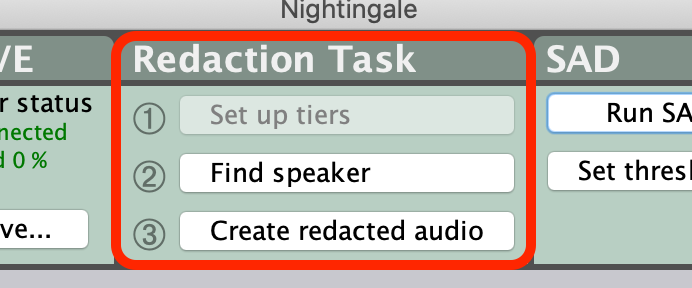
An in-app help pop-up with reminder instructions can be accessed by clicking the '2. Find speaker' button when no BLEEP regions have been added.
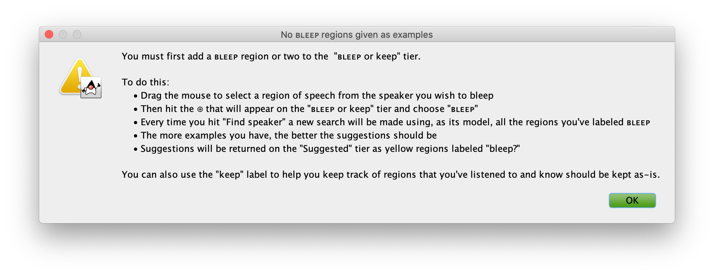
Finding/Labeling Audio to Redact
Start by selecting a portion of audio that contains only the speaker you wish to redact by clicking and dragging in the waveform portion of the audio after locating an appropriate speech segment. It is possible to perform this step with as little as 3-5 seconds of audio from the appropriate speaker, but providing more labeled audio at the start will make the system's suggestions for additional regions more accurate.
Add this selection as a region to be 'bleeped' by clicking the '+' icon directly below your selection in the "BLEEP or keep" tier, and selecting BLEEP.
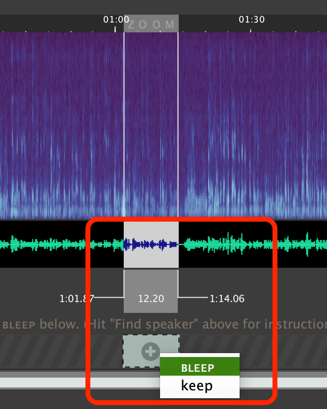
Repeat this until you have selected at least 3-5 seconds of the speaker you wish to redact (more is better).
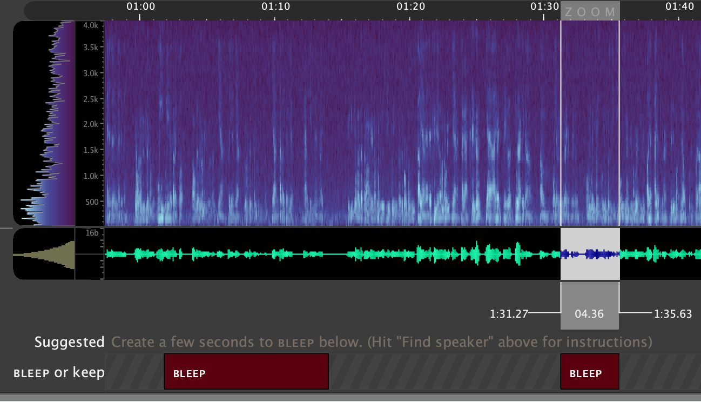
Once you've selected some audio to get started, tell the system to find more speech from this speaker by clicking '2. Find speaker' in the 'Redaction Task' GUI panel.
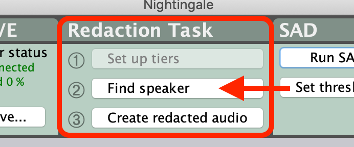
In the ‘Suggested’ tier you will see ‘processing’ followed by yellow boxes where the speaker of interest is likely to be speaking, this can be useful in finding additional areas with the speaker. Use the ‘Suggested’ tier to help review the rest of the file and add all other regions that you want to redact as BLEEP regions.
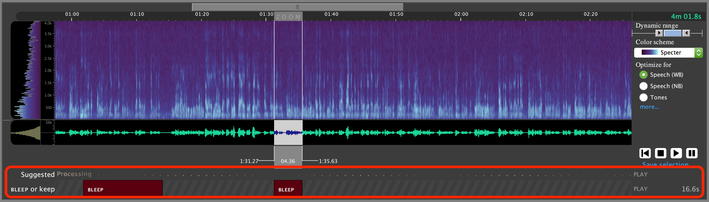
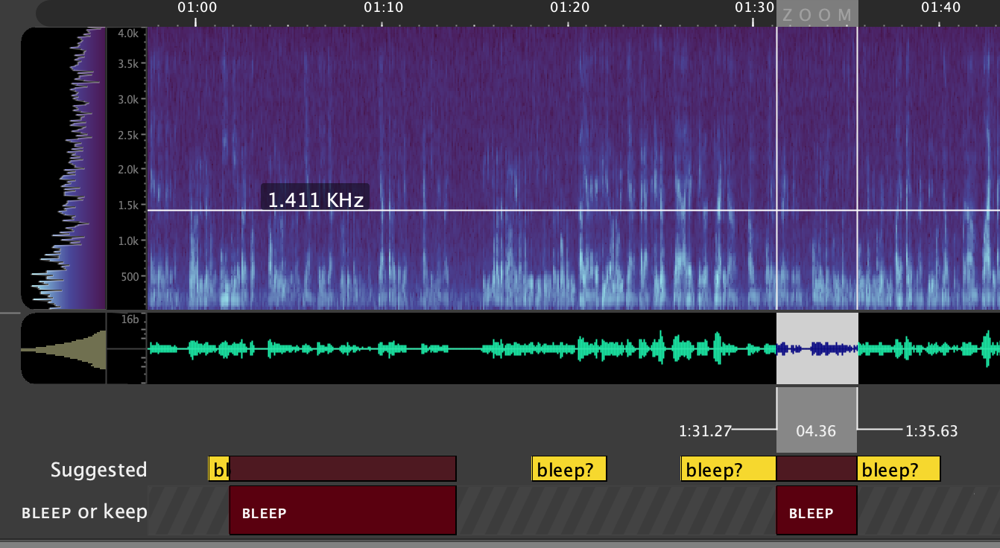
You can perform the 'Find Speaker' step as many times as is desired to continue refining the provided suggestions. It will always use each BLEEP region together as a representation of the speaker you're attempting to find.
Note that if the system suggests regions of speech that do not belong to the speaker to be redacted, you can stop future suggestions of this region by selecting the suggestion and labeling it as keep. The keep regions are not essential for this task, and can be used or not depending on user preference.
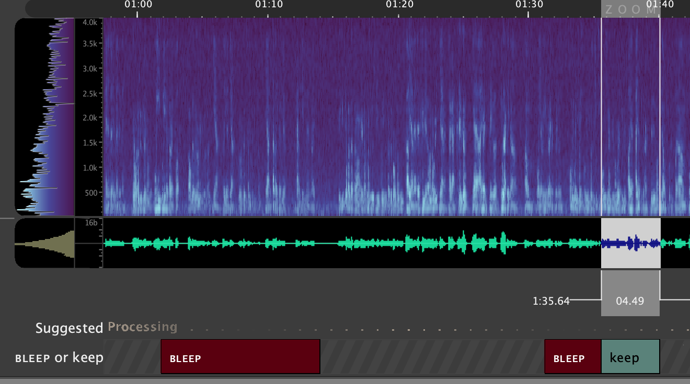
Note that if you make a mistake and mark a region you wish to redact as keep, or a region you wish to be left alone as BLEEP, you can remove this selection by hovering over or clicking the respective label, and selecting the 'x' that appears in the top left corner. You will then be free to re-add this label as a different type, or adjust the boundaries and then do so.
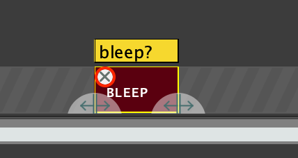
Redacting Selected Audio
Once you have found and labeled all regions containing speech belonging to this speaker, you can proceed on to the final step in the process, of actually redacting the selected audio. This is done by selecting the '3. Create redacted audio' button from the 'Redactino Task' GUI panel.
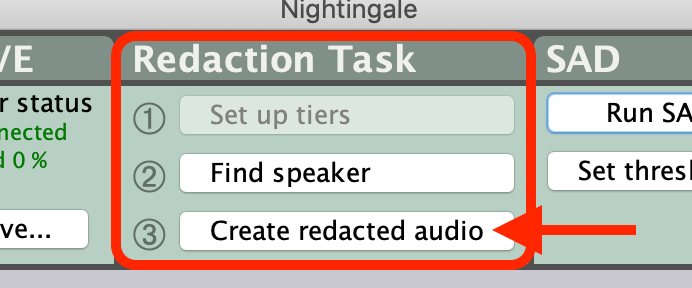
Once this is done, the GUI will prompt you with a file-save dialog to select where to save out the new audio file.
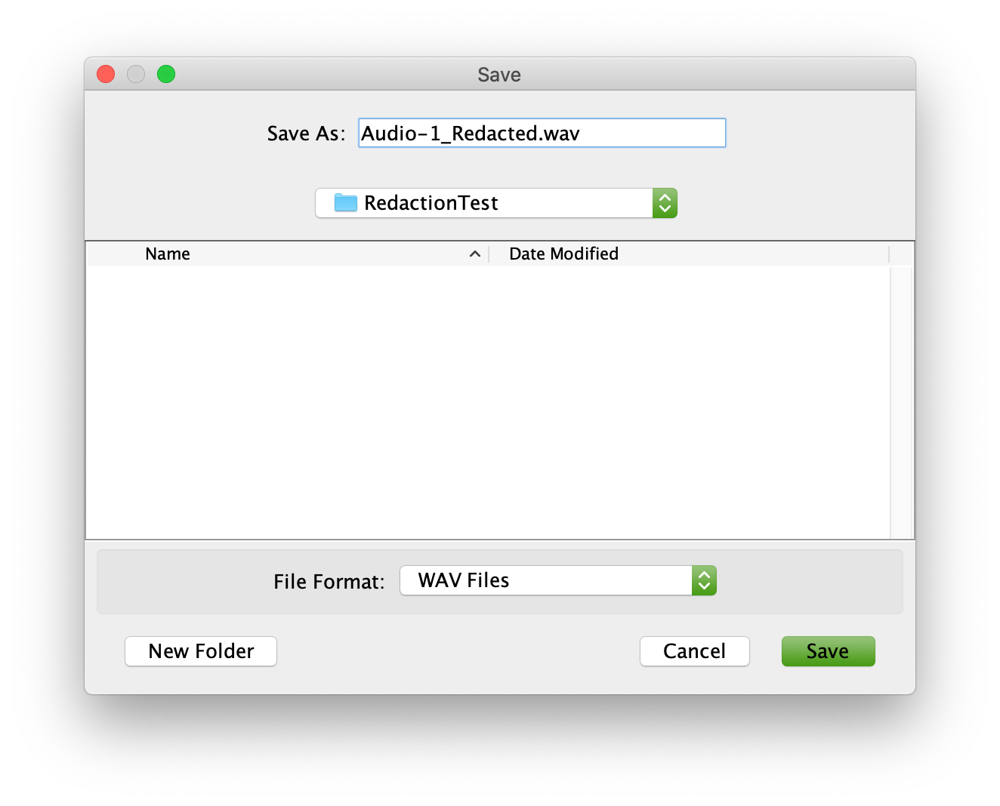
Finally, a new slot is added below the BLEEP or keep tier that will display the redacted audio once it is created, and allow review of the redacted audio.
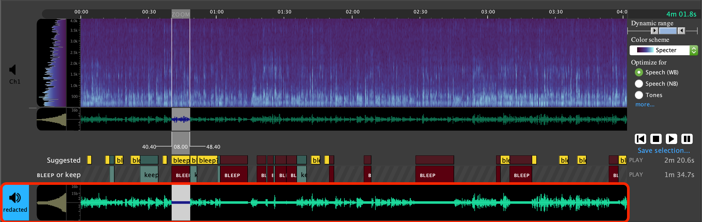
Select which channel will be played back using the speaker icons to the left of each waveform slot, and review the final redacted audio.
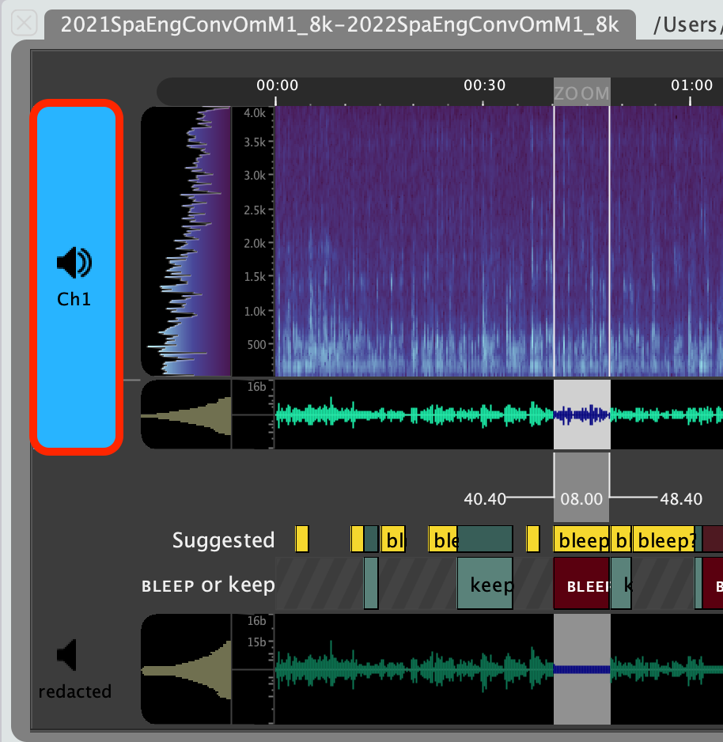 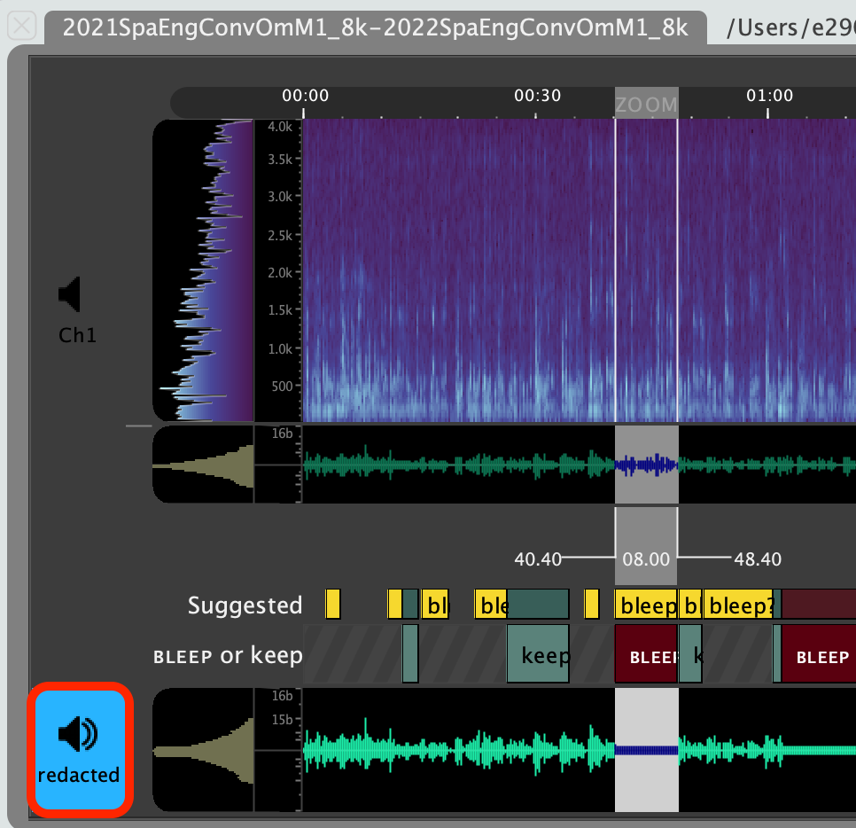
If you find while reviewing this audio that any audio from the speaker was missed and is still present in the final file, it is still possible to step through each part of this process again as necessary. A new BLEEP region (or regions) can be added at this point to catch the missed speech, and the audio can be resubmitted through '3. Create redacted audio'. At this point, the user can choose to save a new file, or overwrite the original redacted file.
Cautions and Limitations
Note that there is currently no mechanism for saving progress or state of the Redaction Task or BLEEP or keep tier. The final created audio file is saved in the location provided by the user, but it is not currently possible to save the GUI state while in the middle of labeling BLEEP regions and resume or complete the redaction task at a later time.